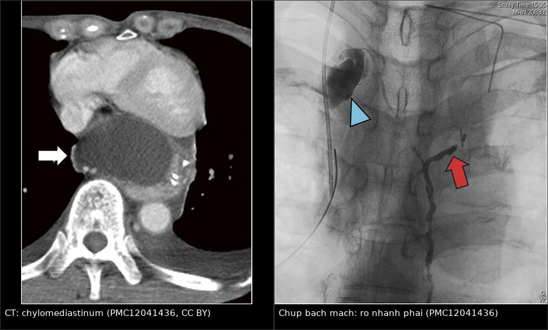
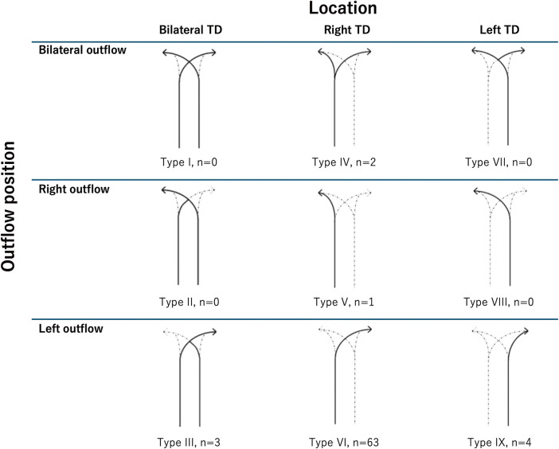
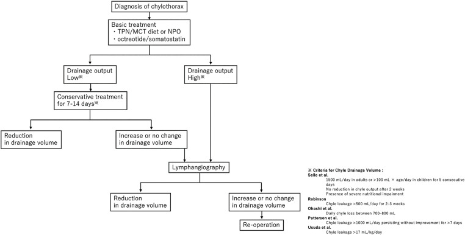
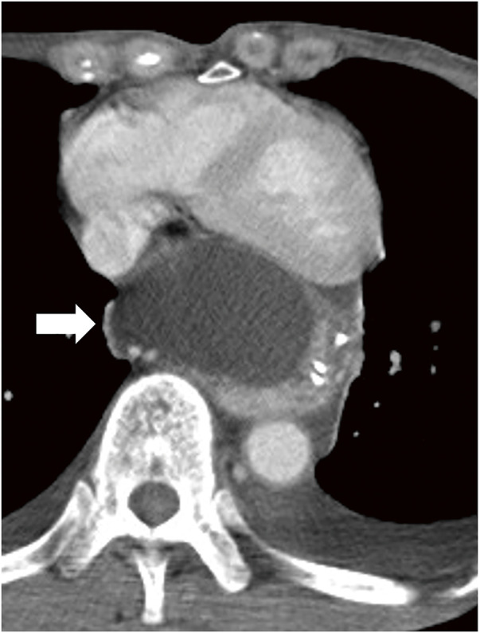
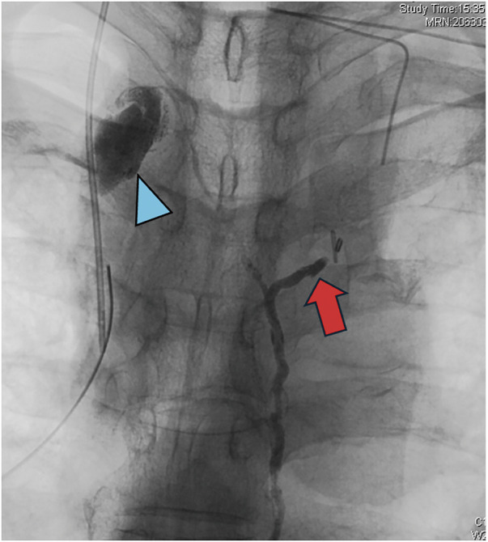
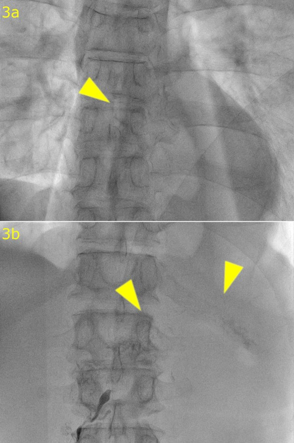

1887 — Rò dưỡng trấp sau cắt thực quản: vì sao dịch "trắng sữa" xuất hiện muộn và khi nào phải buộc ống ngực / Post-esophagectomy chylothorax
Tags: pattern:chylothorax pattern:tran-dich-mang-phoi pattern:ro-bach-huyet pattern:chylomediastinum vung:trung-that vung:mong-phoi vung:ong-nguc protocol:CT-nguc protocol:lymphangiography protocol:DCMRL score:TG-dich score:luu-luong
Mức chắc chắn (certainty): tổng hợp y văn (literature synthesis) — biên từ 500 ca cắt thực quản một trung tâm (Cureus 2026, PMC12979614, CC BY 4.0), đoàn hệ 17 ca thực quản + 51 ca phổi (J Cardiothorac Surg 2026, PMC13231676, CC BY-NC-ND), ca chylomediastinum chèn ép tim (Surg Case Rep 2025, PMC12041436, CC BY 4.0), ca rò dưỡng trấp dai dẳng do lỗ hoành không đóng (Surg Case Rep 2024, PMC11387574, CC BY 4.0), tổng quan biến chứng hiếm sau cắt thực quản (Ther Adv Gastroenterol 2025, PMC12365439, CC BY-NC 4.0) và ca chylothorax – pseudochylothorax (Case Reports Immunol 2026, PMC13681740, CC BY 4.0). Đây là bài riêng cho cắt thực quản; nhánh sau cắt/ghép gan nằm ở 1839, nhánh sau mổ tim ở trẻ ở 6161.
Câu chốt: sau cắt thực quản, rò dưỡng trấp không xuất hiện ngay mà trung bình ngày 7 (2–7 ngày), vì dưỡng trấp ứ ở trung thất sau rồi mới vỡ qua màng phổi thành; và gần như luôn ở bên PHẢI (17/17 ca), vì ống ngực đi bên phải ĐMC xuống tới ngang T5 mới bắt chéo sang trái. Ống thông ra dịch trắng sữa hoặc > 500 mL/ngày là lúc phải chọc đo triglyceride, không chờ: TG dịch > 110 mg/dL xác định chẩn đoán, 50–110 mg/dL là vùng xám phải tìm hạt chylomicron. Lưu lượng > 1.000 mL/ngày kéo dài 7 ngày, > 1.500 mL/ngày × 5 ngày hoặc > 17 mL/kg/ngày là các ngưỡng mổ kinh điển; thể lưu lượng cao ≥ 800 mL/ngày nên buộc ống ngực sớm trong 48–72 giờ thay vì "chờ nội khoa 2 tuần" — trong loạt 6 ca rò, ca duy nhất điều trị nội khoa đã tử vong ngày 18, 5 ca mổ sớm khỏi 100%, ra viện 13–14 ngày so với 18 ngày (PMC12979614).
1. Tổng quan bệnh học – cơ chế hình ảnh (TẠI SAO)
1.1 Ống ngực: một dòng chảy 2,5 lít mỗi ngày nằm sát đường mổ
- Lưu lượng và thành phần: ống ngực dẫn ~2.500 mL/ngày (có thể 1,5–2,5 L), tăng sau bữa ăn có mỡ và đạt đỉnh ~3 giờ sau ăn. Dịch dưỡng trấp giàu triglyceride dạng chylomicron, lympho bào (thường > 70–80%), protein, immunoglobulin, điện giải (PMC13231676). Vì vậy rò dưỡng trấp không phải "mất ít nước" mà là mất miễn dịch và dinh dưỡng: giảm lympho bào, giảm albumin, suy dinh dưỡng, nhiễm trùng, phù.
- Giải phẫu quyết định bên tràn dịch: ống ngực dài 36–45 cm, đường kính 2–3 mm, vào lồng ngực qua lỗ ĐMC của cơ hoành, đi giữa tĩnh mạch azygos và ĐMC ngực ở nửa ngực PHẢI, rồi bắt chéo sang trái ở ngang T5 trước khi đổ vào góc tĩnh mạch trái. Hệ quả thực hành: tổn thương dưới T5 → tràn dưỡng trấp bên PHẢI; tổn thương trên T5 → bên TRÁI. Trong loạt 17 ca cắt thực quản, 100% rò ở bên phải, trung bình ngày 7 sau mổ (PMC13231676).
- Biến thể giải phẫu là quy tắc, không phải ngoại lệ: hơn 40% người có biến thể ống ngực, thường gặp ống đôi/hai nhánh. Bảng phân loại Adachi–Kihara (9 kiểu, n = 73 ca chụp bạch mạch) cho thấy kiểu VI chiếm 86% (63/73), còn kiểu IV — ống ngực hai nhánh tách ở trung thất trên — chỉ 2,7% (2/73) (PMC12041436). Đây chính là lý do buộc "một ống ngực" có thể thất bại vì còn nhánh thứ hai.
- TẠI SAO cắt thực quản là mổ nguy cơ cao nhất trong các mổ ngực: phẫu tích thực quản đi dọc toàn bộ trung thất sau, nạo hạch hai hoặc ba vùng, và ống ngực dính sát thực quản trung thất giữa — nơi u T3 trở lên đã phá vỡ lớp mô và gây viêm. Yếu tố nguy cơ được nêu: xạ trị trước mổ, ung thư biểu mô vảy, diện cơ thể lớn, cân bằng dịch trong mổ kém (PMC12365439).
1.2 Vì sao chylothorax xuất hiện MUỘN và vì sao có thể là chylomediastinum
- Cơ chế hai thì: dưỡng trấp thoát ra trung thất sau, tích thành ổ dịch trung thất (chylomediastinum); chỉ khi màng phổi thành bị rách/ thấm hoặc ống dẫn lưu trung thất không đủ thì dịch mới vào khoang màng phổi. Vì vậy dấu hiệu lâm sàng thường xuất hiện 2–7 ngày sau mổ, khi dịch đã đủ lớn (PMC13231676).
- Hệ quả 1 —"tràn dịch sau mổ" có thể là ổ dưỡng trấp khu trú: CT thấy ổ dịch trung thất đậm độ dịch, có thể chèn ép nhĩ trái/thất trái gây chèn ép tim cấp. Ca minh họa: bệnh nhân 72 tuổi, ngày 8 sốt, ngày 12 nhịp nhanh – tụt huyết áp, CT cho thấy ổ dịch trung thất lớn; mở ngực cấp cứu thấy dịch trong, đặt dẫn lưu trung thất và màng phổi phải (PMC12041436).
- Hệ quả 2 —"dịch trắng sữa" không phải điều kiện chẩn đoán: bệnh nhân nhịn ăn/ nuôi tĩnh mạch hoàn toàn có thể ra dịch vàng trong vì không có chylomicron để tán xạ ánh sáng; ngược lại mủ (empyema) và pseudochylothorax cũng đục. Vì thế màu sắc có độ nhạy thấp, phải đo triglyceride.
- TẠI SAO CT một mình không gọi được tên: dưỡng trấp có đậm độ gần nước (khoảng 0–20 HU), không ngấm thuốc, trùng với dịch thanh mạc, seroma sau mổ, dịch tụ sau nạo hạch, nước tiểu, mật loãng. Trên CT, chylothorax chỉ là "dịch đậm độ dịch"; cái phân biệt là chọc dò + sinh hóa. Ngược lại, máu tụ 35–70 HU và mỡ −40 đến −120 HU mới tách được bằng đậm độ.
- TẠI SAO chụp bạch mạch lại "nhìn thấy" chỗ rò: Lipiodol (dầu iod hóa) tiêm vào hạch bẹn dưới siêu âm (intranodal lymphangiography) đi theo bạch huyết chậu → bể dưỡng trấp → ống ngực, làm hiện hình toàn bộ đường đi và điểm thoát thuốc. Dầu iod còn gây viêm xơ tại chỗ rò — tác dụng vừa chẩn đoán vừa điều trị; liều tối đa 20 mL được coi là an toàn (PMC13231676).
1.3 Số phải nhớ (dịch tễ, lưu lượng, kết cục)
- Tần suất rò dưỡng trấp sau cắt thực quản: 0,9–9,0% (PMC11387574), 1,1–3,8% (PMC12041436), 1–4% trong các loạt lớn (PMC12979614), tới 2% được coi là "rò đáng kể" (PMC13231676). Loạt 500 ca: 1,2% (6/500) (PMC12979614).
- Thể kháng trị: < 2% trong y văn, 0,3% tại một trung tâm lớn — nghĩa là đa số đáp ứng, nhưng nhóm kháng trị chính là nhóm tử vong (PMC12365439).
- Lưu lượng và thời gian nằm viện: nhóm cắt thực quản có > 2–3 L/ngày, ống dẫn lưu lưu trung bình 3 tuần, nằm viện 24 ngày; nhóm cắt phổi chỉ 1.179 mL/ngày, ống 11,2 ngày, nằm viện 12,1 ngày (PMC13231676). Trong loạt 24 ca có chụp bạch mạch, nằm viện trung vị 35,5 ngày nhưng rút ống chỉ sau 9 ngày kể từ lúc chụp (PMC12041436).
- Tử vong: tới 47% nếu rò kéo dài (PMC13231676); trong loạt 6 ca, 16,7% — và ca tử vong duy nhất là ca không mổ (PMC12979614). Ở nhóm mổ sớm: khỏi 5/5, ra viện 13–14 ngày so với 18 ngày của ca nội khoa.
- Định nghĩa "lưu lượng cao" và mốc mổ (chưa thống nhất — ghi rõ mâu thuẫn nguồn): Selle: > 1.500 mL/ngày ở người lớn (hoặc 100 mL × tuổi/ngày ở trẻ) × 5 ngày, hoặc > 2 tuần, hoặc suy dinh dưỡng nặng; Patterson: > 1.000 mL/ngày > 7 ngày; Robinson: > 500 mL/ngày trong 2–3 tuần; Ohashi: 700–800 mL/ngày; Usuda: > 17 mL/kg/ngày (PMC12041436). Loạt 500 ca dùng ngưỡng ≥ 800 mL/ngày kéo dài > 48 giờ để chỉ định buộc ống ngực sớm 48–72 giờ (PMC12979614).
- Điều trị nội khoa: TPN đơn thuần chỉ khỏi 3/17 (17%) ca thực quản; octreotide 20–40 µg/kg/ngày dưới da 3–4 ngày; midodrine 10–20 mg uống 3–4 lần/ngày (PMC13231676). Với lưu lượng thấp, thời gian nội khoa hợp lý là 7–14 ngày (PMC12041436).
- Can thiệp nội mạch: chụp bạch mạch điều trị đạt 83% thành công lâm sàng sau 1–2 lần (PMC12365439); nút ống ngực qua da (TDE) đạt 49/50 (96%) trong một loạt, và đường vào trong hạch (intranodal) tốt hơn đường bàn chân (pedal) (PMC13231676).
2. Mẫu hình + chẩn đoán phân biệt theo vị trí và bối cảnh (Gamut)
- A — Tràn dịch màng phổi PHẢI, ngày 2–10 sau cắt thực quản: gamut hẹp và bắt buộc nghĩ dưỡng trấp trước tiên; sau đó là rò miệng nối/empyema, tràn dịch phản ứng, máu tụ, xẹp phổi – tràn dịch do giảm thông khí. Bốn câu hỏi: dịch đục hay trong? lưu lượng bao nhiêu? có sốt/nhiễm trùng? amylase dịch bao nhiêu?
- B — Ổ dịch TRUNG THẤT khu trú (chylomediastinum): gamut: dưỡng trấp khu trú, rò miệng nối dẫn tới áp-xe trung thất, tụ máu, seroma quanh ống dẫn lưu, hoại tử mỏm đại tràng/ dạ dày. Chylomediastinum rất hiếm — chỉ 7 ca trong y văn thế giới tính tới 2025 (PMC12365439), nên dễ bị gọi nhầm là rò miệng nối + nhiễm trùng và điều trị sai hướng.
- C — Tràn dịch dưỡng trấp KHÔNG do mổ (bối cảnh khác): lymphoma (nguyên nhân không do chấn thương hay gặp nhất), u trung thất, bệnh bạch huyết bẩm sinh, xơ gan (hepatic chylothorax), giun chỉ. Khác biệt: không có ổ rò khu trú dễ thấy trên chụp bạch mạch, điều trị bệnh nền là chính.
- D — "Kháng trị" mà không thấy rò ống ngực: phải nghĩ dưỡng trấp từ ổ bụng tràn lên qua LỖ HOÀNH KHÔNG ĐÓNG sau khi phẫu tích/ cắt ống ngực và tái tạo sau trung thất. Ca điển hình: 66 tuổi, ngày 15 rò dưỡng trấp qua lỗ ống nuôi ăn, kèm chylothorax; chụp bạch mạch không thấy rò ở trung thất mà chỉ thấy rò ở ổ bụng trên — dưỡng trấp chảy ngược lên lồng ngực vì áp lực ổ bụng > áp lực lồng ngực (PMC11387574). Đây là lý do buộc ống ngực lần nữa sẽ thất bại; phải đóng lỗ hoành + chụp bạch mạch lặp lại.
- E — Tràn dịch dưỡng trấp một bên TRÁI: tổn thương trên ngang T5 (trung thất trên, góc tĩnh mạch trái) hoặc biến thể ống ngực đi bên trái. Đừng loại trừ chỉ vì "bên trái".
- F — Dịch đục mà KHÔNG phải dưỡng trấp: empyema (mủ, pH thấp, LDH cao), pseudochylothorax (tinh thể cholesterol, TG thấp, bệnh màng phổi mạn do lao/viêm khớp dạng thấp), dịch giàu protein (huyết thanh đục).
3. Bảng so sánh phân biệt (ma trận đối chiếu)
| Thực thể (entity) | Hình ảnh điển hình (CT/ X-quang/ chụp bạch mạch) | Chốt vào (rule-in) | Chốt loại (rule-out) | Gợi ý xác nhận |
|---|---|---|---|---|
| Rò dưỡng trấp màng phổi (chylothorax) | Tràn dịch phải, tự do hoặc khu trú; 0–20 HU, không ngấm thuốc; có thể kèm ổ dịch trung thất | TG dịch > 110 mg/dL, hạt chylomicron, lympho > 70–80%; lưu lượng > 500 mL/ngày, đục sau khi ăn | Màu trong khi nhịn ăn không loại trừ; TG < 50 mg/dL gần như loại | Chọc dò sinh hóa; chụp bạch mạch tìm điểm rò |
| Chylomediastinum (dưỡng trấp khu trú trung thất) | Ổ dịch trung thất sau, đậm độ dịch, bờ nhẵn, chèn ép nhĩ/thất trái, có thể tràn dịch màng tim | Dịch trung thất + TG cao trên chọc hút; không thấy rò miệng nối trên cản quang | Khí trong ổ dịch, bờ viêm, amylase cao → rò miệng nối/áp-xe | CT cản quang + chọc hút dưới CT; chụp bạch mạch |
| Rò miệng nối / empyema | Ổ dịch có khí, bờ dày ngấm thuốc, quanh miệng nối; màng phổi split pleura, dày màng phổi | Khí + dịch, amylase dịch rất cao, pH < 7,2, glucose thấp, cấy dương | Dịch trong, TG cao, không khí, không sốt → nghĩ dưỡng trấp | Cản quang nước hòa tan qua miệng nối; nội soi |
| Máu tụ màng phổi/ trung thất | 35–70 HU, tăng đậm độ, có thể mức lắng; Hct dịch ≈ máu | Hct dịch > 5–10% Hct máu; đậm độ cao trên CT không cản quang | Dịch 0–20 HU, không lắng → không phải máu | Đo Hct dịch; so CT trước/sau |
| Pseudochylothorax | Tràn dịch mạn, khu trú, dày/ vôi hóa màng phổi; không có ổ rò bạch mạch | Tinh thể cholesterol (độ nhạy ~90%), cholesterol dịch > 200 mg/dL, TG thấp | TG > 110 mg/dL + chylomicron → loại pseudochylothorax | Soi tinh thể dưới ánh sáng phân cực; bệnh nền lao/viêm khớp |
| Dưỡng trấp từ ổ bụng qua lỗ hoành | Tràn dịch phải tái phát dù ống ngực đã buộc; cổ trướng dưỡng trấp; chụp bạch mạch chỉ rò ở bụng | Rò ổ bụng trên trên chụp bạch mạch + dịch màng phổi TG cao; xạ hình thấy dồn cả ổ bụng và màng phổi | Có điểm rò trung thất rõ → là rò ống ngực thật | Chụp bạch mạch lặp lại; đóng lỗ hoành |

Trái: ổ dịch trung thất sau đậm độ dịch (mũi tên trắng), chèn ép nhĩ trái — nguyên nhân chèn ép tim ngày 12 sau mổ. Phải: chụp bạch mạch — nhánh trái đã buộc (mũi tên xanh) nhưng dưỡng trấp vẫn rò từ nhánh phải (mũi tên đỏ) do ống ngực hai nhánh (kiểu IV). Nguồn: Surg Case Rep 2025, PMC12041436, CC BY 4.0; ảnh ghép letterbox, không cắt.Đọc chính xác ba dấu hiệu hay bị lẫn
- "Dịch đậm độ dịch" ≠ dưỡng trấp. Trên CT, 0–20 HU chỉ nói "không phải máu, không phải mỡ"; nó không phân biệt dưỡng trấp với seroma, dịch thấm, nước tiểu hay mật loãng. Chỉ sinh hóa dịch mới trả lời.
- Vị trí rò trên chụp bạch mạch phải đọc theo giải phẫu, không theo "chỗ có thuốc". Thuốc có thể tràn ra ổ bụng rồi đi ngược lên ngực; khi đó hình ảnh "rò màng phổi" là hệ quả, không phải nguồn. So hai thì (trung thất và ổ bụng) trước khi kết luận (PMC11387574).
- Buộc ống ngực một lần không đủ khi có biến thể. Kiểu IV (2,7%) có hai nhánh tách ở trung thất trên; buộc nhánh trái vẫn còn nhánh phải rò (PMC12041436). Vì thế sau buộc mà lưu lượng không giảm trong 24–48 giờ, phải chụp bạch mạch lại chứ không "chờ thêm".
4. Protocol chụp + hệ phân độ/ ngưỡng xử lý
4.1 Trình tự chẩn đoán (làm đúng thứ tự để không mổ oan)
flowchart TD
A[Tràn dịch hoặc ổ dịch trung thất sau cắt thực quản] --> B[CT ngực cản quang + cản quang nước hòa tan]
B --> C{Ống dẫn lưu đục sau ăn hoặc trên 500 mL/ngày?}
C -->|Có| D[Chọc dò: TG, cholesterol, amylase, pH, glucose, LDH, tế bào, cấy]
C -->|Không| E[Theo dõi sát, đo lưu lượng mỗi 24 giờ]
D --> F{TG dịch trên 110 mg/dL?}
F -->|Có| G[Chylothorax - xác định]
F -->|Không, TG 50-110| H[Tìm hạt chylomicron]
F -->|Không, TG dưới 50| I[Nghĩ rò miệng nối, empyema, máu tụ, pseudochylothorax]
G --> J{Lưu lượng trên 800 mL/ngày kéo dài trên 48 giờ?}
J -->|Có| K[Buộc ống ngực sớm 48-72 giờ hoặc nút mạch qua da]
J -->|Không| L[Nội khoa: nhịn ăn, TPN, MCT, octreotide, midodrine 7-14 ngày]
L --> M{Giảm dưới 200 mL/ngày?}
M -->|Có| N[Tiếp tục, cai dẫn lưu]
M -->|Không| O[Chụp bạch mạch Lipiodol + nút mạch hoặc mổ]
4.2 Protocol hình ảnh
- CT ngực – bụng có cản quang tĩnh mạch, lát ≤ 1–2 mm: đánh giá cả hai khoang màng phổi, trung thất sau, miệng nối, mỏm đại tràng/ dạ dày, lỗ hoành; đo HU của dịch ở 3 điểm và so với dịch trong ổ bụng. Cản quang nước hòa tan qua đường miệng để loại rò miệng nối trước khi kết luận "dưỡng trấp".
- Siêu âm đầu giường: xác định vị trí ổ dịch, hướng dẫn chọc hút và đặt ống dẫn lưu; đánh giá chèn ép tim khi có ổ dịch trung thất (dịch màng tim, đảo ngược vách liên thất).
- Chụp bạch mạch bằng Lipiodol (intranodal lymphangiography): chọc hạch bẹn dưới siêu âm, tiêm Lipiodol, chụp thì sớm và thì muộn để thấy bể dưỡng trấp – ống ngực – điểm rò. Liều tối đa 20 mL; có thể lặp lại (ca kháng trị được chụp 3 lần) (PMC11387574).
- Nút ống ngực qua da (thoracic duct embolization – TDE): chọc bể dưỡng trấp qua da, đặt coil hoặc keo cyanoacrylate; thành công kỹ thuật cao, 83% thành công lâm sàng sau 1–2 lần (PMC12365439); một loạt 50 ca đạt 96% (PMC13231676). Bệnh nhân cần nhịn ăn ≥ 48 giờ + octreotide/ midodrine trước thủ thuật để giảm dòng chảy, giúp tiếp cận bể dưỡng trấp.
- MRI bạch huyết (MR lymphangiography/ DCMRL): T2 không cản quang cho thấy ống bạch huyết giãn, mạng bạch huyết trung thất/ sau phúc mạc; hữu ích lập kế hoạch trước mổ và ở bệnh nhân đã mổ bụng lớn; hạn chế là khó định vị chính xác điểm rò và không phải trung tâm nào cũng có (PMC13231676).
- Xạ hình bạch huyết (lymphoscintigraphy): thấy dồn thuốc vào cả dịch ổ bụng và dịch màng phổi — dấu hiệu gợi ý dưỡng trấp từ bụng lên ngực; độ phân giải thấp, chỉ dùng định hướng (PMC11387574).
4.3 Ngưỡng xử lý (bảng tra nhanh)
| Thông số | Ngưỡng | Ý nghĩa thực hành |
|---|---|---|
| Triglyceride dịch màng phổi | > 110 mg/dL (1,24 mmol/L) | Xác định chylothorax; 50–110 phải tìm chylomicron; < 50 gần như loại |
| Tỷ lệ TG dịch/ huyết thanh | > 1 | Hỗ trợ xác định; tỷ lệ cholesterol dịch/ huyết thanh < 1 |
| Tế bào dịch | > 1.000/µL, lympho > 70–80% | Phù hợp dưỡng trấp; mủ thì lympho thấp, neutrophil cao |
| Cholesterol dịch | > 200 mg/dL + tinh thể | Nghĩ pseudochylothorax (lao/ viêm khớp mạn) |
| Amylase dịch | Rất cao | Rò miệng nối/ rò tụy; loại chylothorax đơn thuần |
| Lưu lượng | > 500 mL/ngày | Bắt đầu đo TG, theo dõi sát |
| Lưu lượng cao | ≥ 800 mL/ngày > 48 giờ | Cân nhắc buộc ống ngực sớm 48–72 giờ |
| Ngưỡng mổ kinh điển | > 1.000 mL/ngày × 7 ngày; > 1.500 mL/ngày × 5 ngày; > 17 mL/kg/ngày; > 500 mL/ngày × 2–3 tuần | Chọn theo bệnh nhân; không có ngưỡng duy nhất |
| Thời gian nội khoa | 7–14 ngày (lưu lượng thấp) | Quá mốc này mà không giảm → chụp bạch mạch/ mổ |
| Khỏi | < 200 mL/ngày dịch không đục | Tiêu chuẩn rút ống trong loạt 500 ca |

*Phân loại 9 kiểu ống ngực theo vị trí và nơi đổ (n = 73 ca chụp bạch mạch): kiểu VI 86%, kiểu IV 2,7% (hai nhánh tách ở trung thất trên). Nguồn: Surg Case Rep 2025, PMC12041436, CC BY 4.0.*
Lưu đồ của nhóm tác giả: lưu lượng thấp → nội khoa 7–14 ngày; lưu lượng cao/không giảm → chụp bạch mạch, không giảm nữa → mổ lại. Khung phải là các ngưỡng lưu lượng của Selle, Robinson, Ohashi, Patterson, Usuda. Nguồn: Surg Case Rep 2025, PMC12041436, CC BY 4.0.5. Biến thể bình thường và cạm bẫy
- Dịch trong ≠ không rò. Bệnh nhân nhịn ăn/ TPN ra dịch vàng trong vì thiếu chylomicron; nếu chỉ dựa vào màu, sẽ bỏ sót và chờ tới khi suy dinh dưỡng. Quy tắc: lưu lượng > 500 mL/ngày hoặc dịch đổi màu sau khi ăn → đo TG.
- Chylomediastinum bị gọi nhầm là rò miệng nối + nhiễm trùng. Ca được mô tả đã bị chẩn đoán nhầm ở tuyến trước là rò miệng nối cổ + nhiễm trùng trung thất, trong khi thực chất là ổ dưỡng trấp trung thất và khỏi sau chụp bạch mạch (PMC12365439). Dấu hiệu phân biệt: không khí trong ổ dịch, bờ viêm, amylase cao thuộc rò miệng nối; dịch thuần, TG cao, không khí thuộc dưỡng trấp.
- Chèn ép tim là biến chứng bị bỏ qua của ổ dịch trung thất. Bệnh nhân ngày 8 sốt, ngày 12 nhịp nhanh – tụt huyết áp; CT thấy ổ dịch lớn sau tim. Trong bối cảnh này, sốt không loại trừ dưỡng trấp (dưỡng trấp gây viêm màng phổi/ trung thất nhẹ nhưng vẫn có thể sốt do xẹp phổi, xẹp thùy).
- Hút áp lực âm mạnh làm rò lâu lành. Với chylomediastinum, nhóm tác giả khuyến cáo dẫn lưu ngắt quãng để giải chèn ép, tránh hút âm liên tục vì làm tăng mất dịch và chậm lành (PMC12365439). Với chylothorax màng phổi, ngược lại, cần dẫn lưu kín liên tục để phổi nở áp vào chỗ rò — đừng áp dụng lời khuyên của ổ trung thất cho khoang màng phổi.
- Buộc ống ngực "thất bại" vì lý do giải phẫu, không phải vì tay nghề. Kiểu IV (hai nhánh) và lỗ hoành không đóng là hai nguyên nhân cơ học; không giảm lưu lượng sau 24–48 giờ = chụp bạch mạch lại, không chờ thêm 2 tuần.
- "Pseudochylothorax" trong bệnh nhân ung thư. Tràn dịch mạn, khu trú, dày màng phổi, TG thấp (ví dụ 19 mg/dL), cholesterol 125 mg/dL, tinh thể cholesterol dưới ánh sáng phân cực — không phải dưỡng trấp, không cần buộc ống ngực (PMC13681740).
- Bẫy mặt cắt: ổ dịch sau trung thất trên CT ngang có thể bị đọc là tràn dịch màng phổi khu trú hoặc nang/ hoại tử mỏm dạ dày; cần hai bình diện + thì cản quang và đối chiếu vị trí so với màng phổi, ĐMC, nhĩ trái. Dịch dưới cơ hoành phải phân biệt với cổ trướng (dấu crus lệch, bare area) — liên quan trực tiếp tới cơ chế dưỡng trấp bụng lên ngực.
6. Tự lượng giá — Blind Quiz
Ca 1 — Nam 72 tuổi, cắt thực quản bán phần + tái tạo dạ dày, ngày 8 sốt, ngày 12 nhịp nhanh và tụt huyết áp. CT ngực có cản quang:

- Câu hỏi: mô tả ổ dịch; dấu hiệu nào giải thích tụt huyết áp? Ba chẩn đoán phân biệt và bước tiếp theo?
Bấm để hiện đáp án (findings + chẩn đoán)
- Dấu hiệu: ổ dịch lớn, đậm độ dịch, bờ nhẵn ở trung thất sau, chèn ép nhĩ trái (mũi tên trắng); không thấy khí trong ổ dịch. Đây là chylomediastinum gây chèn ép tim — giải thích nhịp nhanh, tụt huyết áp.
- Chẩn đoán: rò dưỡng trấp khu trú trong trung thất sau cắt thực quản; chọc hút dịch cho TG cao, cấy âm tính.
- Phân biệt: rò miệng nối/ áp-xe trung thất (có khí, bờ viêm, amylase cao), tụ máu (35–70 HU), seroma (không triệu chứng, TG thấp).
- Xử trí: dẫn lưu trung thất giải chèn ép; chụp bạch mạch Lipiodol để tìm điểm rò; nếu vẫn rò → buộc ống ngực hoặc nút mạch. Ở ca gốc: chụp bạch mạch ngày 14, buộc nhánh phải ngày 41, ra viện ngày 118.
- Nguồn: Surg Case Rep 2025, PMC12041436, CC BY 4.0.
Ca 2 — Cùng bệnh nhân, chụp bạch mạch qua đường hạch bẹn, phim trung thất trên:

- Câu hỏi: mũi tên xanh và mũi tên đỏ chỉ gì? Vì sao lần mổ đầu "đã buộc ống ngực" mà vẫn rò? Chọn đường mổ nào tiếp theo?
Bấm để hiện đáp án (findings + chẩn đoán)
- Mũi tên xanh: nhánh trái của ống ngực đã được buộc trong mổ đầu — không thấy thuốc đi qua. Mũi tên đỏ: dưỡng trấp rò từ nhánh phải — nhánh còn lại của ống ngực hai nhánh tách ở trung thất trên (kiểu IV, 2,7%).
- Vì sao thất bại: buộc một nhánh không cắt được dòng chảy của nhánh kia; không giảm lưu lượng 24–48 giờ sau buộc là dấu hiệu phải chụp lại.
- Chọn đường: nhánh rò nằm ngang mức xương đòn bên phải → buộc qua đường cổ bên phải là hợp lý; đường xuyên hoành phù hợp hơn khi cần buộc ngay trên cơ hoành ở bệnh nhân đã nạo hạch rộng/ biến thể.
- Nguồn: Surg Case Rep 2025, PMC12041436, CC BY 4.0.
Ca 3 — Nam 66 tuổi, cắt thực quản bán phần nội soi robot, tái tạo dạ dày sau xương ức; ngày 15 rò dưỡng trấp qua lỗ ống nuôi ăn, kèm tràn dịch màng phổi. Chụp bạch mạch Lipiodol:

- Câu hỏi: (a) ổ trên không thấy rò trung thất, ổ dưới thấy thuốc ở đâu? (b) Vì sao tràn dưỡng trấp màng phổi lại xuất hiện dù ống ngực đã cắt? (c) Hai việc phải làm cùng lúc?
Bấm để hiện đáp án (findings + chẩn đoán)
- (a) Ảnh trên (3a): không có rò ở trung thất (mũi tên vàng chỉ ống ngực lành). Ảnh dưới (3b): thuốc thoát ra ổ bụng trên (mũi tên vàng) — nguồn rò là bạch mạch ổ bụng, không phải ống ngực.
- (b) Sau khi cắt ống ngực + tái tạo sau trung thất, lỗ hoành không được đóng kín; áp lực ổ bụng > áp lực lồng ngực nên dưỡng trấp bụng chảy lên khoang màng phổi — "chylothorax" nhưng bản chất là cổ trướng dưỡng trấp tràn lên.
- (c) Đóng lỗ hoành (tăng áp lực ổ bụng, chặn đường tràn) + chụp bạch mạch Lipiodol lặp lại (gây viêm xơ bít điểm rò); ca gốc chụp 3 lần và khỏi.
- Nguồn: Surg Case Rep 2024, PMC11387574, CC BY 4.0.
Bài liên quan chéo
- 001 – Tổng quan hệ Ngực
- 1839 – Chylothorax sau cắt/ ghép gan — ngưỡng TG và đường đi qua cơ hoành
- 6161 – Tràn dưỡng trấp sau mổ tim ở trẻ — cơ chế áp lực tĩnh mạch
- 1844 – Rò và hoại tử thực quản do xạ — phân biệt rò miệng nối
- 1820 – Rò mật – màng phổi — cùng bối cảnh "dịch sau mổ bụng trên"
- 090 – Bỏng hít đường thở ở trẻ
Không dùng để chẩn đoán độc lập khi chưa có người hướng dẫn.